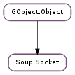

| connect_async(cancellable, callback, *user_data) | |
| connect_sync(cancellable) | |
| disconnect() | |
| get_fd() | |
| get_local_address() | |
| get_remote_address() | |
| is_connected() | |
| is_ssl() | |
| listen() | |
| read(buffer, len, cancellable) | |
| read_until(buffer, len, boundary, boundary_len, got_boundary, cancellable) | |
| start_proxy_ssl(ssl_host, cancellable) | |
| start_ssl(cancellable) | |
| write(buffer, len, cancellable) |
| Name | Type | Flags | Description |
|---|---|---|---|
| async-context | int | r/w/c | The GLib.MainContext to dispatch this socket’s async I/O in |
| clean-dispose | bool | w/c | Warn on unclean dispose |
| is-server | bool | r | Whether or not the socket is a server socket |
| local-address | Soup.Address | r/w/c | Address of local end of socket |
| non-blocking | bool | r/w | Whether or not the socket uses non-blocking I/O |
| proxy-resolver | Gio.ProxyResolver | r/w/c | Gio.ProxyResolver to use |
| remote-address | Soup.Address | r/w/c | Address of remote end of socket |
| ssl-creds | int | r/w | SSL credential information, passed from the session to the SSL implementation |
| ssl-fallback | bool | r/w/c | Use SSLv3 instead of TLS (client-side only) |
| ssl-strict | bool | r/w/c | Whether certificate errors should be considered a connection error |
| timeout | int | r/w | Value in seconds to timeout a blocking I/O |
| tls-certificate | Gio.TlsCertificate | r | The peer’s TLS certificate |
| tls-errors | Gio.TlsCertificateFlags | r | Errors with the peer’s TLS certificate |
| trusted-certificate | bool | r | Whether the server certificate is trusted, if this is an SSL socket |
| use-thread-context | bool | r/w/c | Use GLib.MainContext.get_thread_default |
| Name | Parameters | Return | Description |
|---|---|---|---|
| disconnected | Emitted when the socket is disconnected, for whatever reason. | ||
| event | Gio.SocketClientEvent, Gio.IOStream | Emitted when a network-related event occurs. See Gio.SocketClient ::event for more details. | |
| new-connection | Soup.Socket | Emitted when a listening socket (set up with Soup.Socket.listen ()) receives a new connection. You must ref the new if you want to keep it; otherwise it will be destroyed after the signal is emitted. | |
| readable | Emitted when an async socket is readable. See Soup.Socket.read (), Soup.Socket.read_until () and Soup.Socket :non-blocking. | ||
| writable | Emitted when an async socket is writable. See Soup.Socket.write () and Soup.Socket :non-blocking. |
| Name | Type | Access |
|---|---|---|
| parent | GObject.Object | r |
Bases: GObject.Object
| Parameters: |
|
|---|
Begins asynchronously connecting to sock ‘s remote address. The socket will call callback when it succeeds or fails (but not before returning from this function).
If cancellable is non-None, it can be used to cancel the connection. callback will still be invoked in this case, with a status of Soup.Status.CANCELLED.
| Parameters: | cancellable (Gio.Cancellable or None) – a Gio.Cancellable, or None |
|---|---|
| Returns: | a success or failure code. |
| Return type: | int |
Attempt to synchronously connect sock to its remote address.
If cancellable is non-None, it can be used to cancel the connection, in which case Soup.Socket.connect_sync () will return Soup.Status.CANCELLED.
Disconnects sock. Any further read or write attempts on it will fail.
| Returns: | sock ‘s file descriptor. |
|---|---|
| Return type: | int |
Gets sock ‘s underlying file descriptor.
Note that fiddling with the file descriptor may break the Soup.Socket.
| Returns: | the Soup.Address |
|---|---|
| Return type: | Soup.Address |
Returns the Soup.Address corresponding to the local end of sock.
Calling this method on an unconnected socket is considered to be an error, and produces undefined results.
| Returns: | the Soup.Address |
|---|---|
| Return type: | Soup.Address |
Returns the Soup.Address corresponding to the remote end of sock.
Calling this method on an unconnected socket is considered to be an error, and produces undefined results.
| Returns: | True if sock has SSL credentials set |
|---|---|
| Return type: | bool |
Tests if sock is doing (or has attempted to do) SSL.
| Returns: | whether or not sock is now listening. |
|---|---|
| Return type: | bool |
Makes sock start listening on its local address. When connections come in, sock will emit Soup.Socket ::new-connection.
| Parameters: |
|
|---|---|
| Raises: | |
| Returns: | a Soup.SocketIOStatus, as described above (or Soup.SocketIOStatus.EOF if the socket is no longer connected, or Soup.SocketIOStatus.ERROR on any other error, in which case error will also be set). |
| Return type: | Soup.SocketIOStatus, nread: int |
Attempts to read up to len bytes from sock into buffer. If some data is successfully read, Soup.Socket.read () will return Soup.SocketIOStatus.OK, and *@nread will contain the number of bytes actually read (which may be less than len ).
If sock is non-blocking, and no data is available, the return value will be Soup.SocketIOStatus.WOULD_BLOCK. In this case, the caller can connect to the Soup.Socket ::readable signal to know when there is more data to read. (NB: You MUST read all available data off the socket first. Soup.Socket ::readable is only emitted after Soup.Socket.read () returns Soup.SocketIOStatus.WOULD_BLOCK, and it is only emitted once. See the documentation for Soup.Socket :non-blocking.)
| Parameters: |
|
|---|---|
| Raises: | |
| Returns: | as for Soup.Socket.read () |
| Return type: | Soup.SocketIOStatus, nread: int |
Like Soup.Socket.read (), but reads no further than the first occurrence of boundary. (If the boundary is found, it will be included in the returned data, and *@got_boundary will be set to True.) Any data after the boundary will returned in future reads.
Soup.Socket.read_until () will almost always return fewer than len bytes: if the boundary is found, then it will only return the bytes up until the end of the boundary, and if the boundary is not found, then it will leave the last (boundary_len - 1) bytes in its internal buffer, in case they form the start of the boundary string. Thus, len normally needs to be at least 1 byte longer than boundary_len if you want to make any progress at all.
| Parameters: |
|
|---|---|
| Returns: | success or failure |
| Return type: |
Starts using SSL on socket, expecting to find a host named ssl_host.
| Parameters: | cancellable (Gio.Cancellable or None) – a Gio.Cancellable |
|---|---|
| Returns: | success or failure |
| Return type: | bool |
Starts using SSL on socket.
| Parameters: |
|
|---|---|
| Raises: | |
| Returns: | a Soup.SocketIOStatus, as described above (or Soup.SocketIOStatus.EOF or Soup.SocketIOStatus.ERROR. error will be set if the return value is Soup.SocketIOStatus.ERROR.) |
| Return type: | Soup.SocketIOStatus, nwrote: int |
Attempts to write len bytes from buffer to sock. If some data is successfully written, the return status will be Soup.SocketIOStatus.OK, and *@nwrote will contain the number of bytes actually written (which may be less than len ).
If sock is non-blocking, and no data could be written right away, the return value will be Soup.SocketIOStatus.WOULD_BLOCK. In this case, the caller can connect to the Soup.Socket ::writable signal to know when more data can be written. (NB: Soup.Socket ::writable is only emitted after Soup.Socket.write () returns Soup.SocketIOStatus.WOULD_BLOCK, and it is only emitted once. See the documentation for Soup.Socket :non-blocking.)